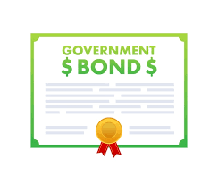

Lesson: Get Started With Investing
Investing is a powerful tool that allows individuals to grow their wealth over time. Unlike saving, where money sits in a bank and earns a small amount of interest, investing enables you to put your money to work in various financial instruments with the potential for greater returns. While there are risks involved, understanding the basics of investing can help you make informed decisions and create a strategy that aligns with your financial goals.

What is Investing?
At its core, investing is the act of allocating money into assets with the expectation of generating a profit or return. When you invest, you buy assets such as stocks, bonds, real estate, or mutual funds that have the potential to increase in value or generate income over time. Successful investing requires patience, research, and an understanding of the risks and rewards associated with different investment vehicles. In investing, you need to be willing to take some risks to achieve substantial returns. However, always do your research, diversify your investments, and avoid gambling on high-risk ventures without understanding the market.
Types of Investments
There are various types of investments that offer different levels of risk and potential return. Here’s an overview of the most common investment options:
- Stocks: Buying a stock means purchasing a small piece of ownership in a company. As the company grows and becomes more profitable, the value of your shares may increase, allowing you to sell them for a profit. Stocks tend to offer high returns over the long term but can also be volatile in the short term. Open a stock investment account in any financial institution of your choice or use investing apps such as Robinhood to start investing in stocks. Before you march on this journey, it's very important to learn how to invest. Read daily news at CNBC or similar other news channels to learn more about what is happening in the stock market and broader economy to make wise investment decisions.
- Bonds: Bonds are essentially loans you give to a government or corporation in exchange for regular interest payments. Bonds are generally considered safer than stocks, but they typically offer lower returns. They are suitable for more conservative investors or those nearing retirement.
- Mutual Funds and ETFs: Each mutual fund or exchange-traded funds (ETFs) contains many different stocks, bonds, or other assets and each portfolio is managed by professionals. Mutual funds and ETFs offer diversification, as they spread your money across many investments, reducing the risk compared to buying individual stocks. They are generally less riskier and less volatile than the individual stocks due to diversification. You can invest in mutual funds/ETFs through your stock investment account. One added benefit of the mutual fund or ETF is that since it is a basket of stocks of many public companies, and not tied to a single company's performance, you won't have to actively manage the portfolio yourself by frequently selling the stocks and thereby deferring the capital gain taxes.

- Real Estate: Investing in property can generate income through rental payments or by buying and selling properties as they increase in value. Real estate requires significant upfront capital but can be highly profitable when managed correctly. Go to Zillow to get a list of properties available for purchase.
- Commodities: Investments in physical assets like gold, silver, oil, and agricultural products are considered commodities. These can provide a hedge against inflation but are often more volatile than other forms of investments.
- Cryptocurrency: A relatively new investment, cryptocurrencies like Bitcoin and Ethereum may seem to offer good returns but they come with significant risks due to their volatility and unregulated nature. Proceed with causion if you decide to invest in cryptocurrencies.
All investments come with some level of risk. Generally, the higher the potential return, the higher the risk involved. For example, while stocks may offer high returns, they can also experience significant fluctuations in value. On the other hand, bonds are safer but provide lower returns. A good investment strategy balances risk and reward based on your financial goals, time horizon, and risk tolerance. Research the investment opportunities carefully before making your decision and don't be afraid to take calculated risks.
Key Lessons in Investing to Generate Wealth

- Assets vs. Liabilities: The key to wealth is owning assets (things that put money in your pocket) and minimizing liabilities (things that take money out of your pocket). For example, owning stocks or rental property can generate income and their values appreciate over time, while excessive credit card debt, expensive vacations or purchasing expensive items like cars or boats are liabilities because they don't generate income, have no or reduced value over time and they drain your wealth. Focus your investments on assets that generate cash flow, such as dividend-paying stocks, rental properties, or businesses or the investments that has the potential of appreciating significantly in value and has lower risk. Be cautious of liabilities that drain your wealth, such as unnecessary debt or spending on depreciating assets.
- Make Money Work for You: This means that instead of relying solely on a paycheck, invest your money into income-generating assets that grow over time. Think of investing as a way to make your money work for you. Stocks, real estate, and businesses can generate passive income while you focus on other aspects of your life. The sooner you invest, the more time your money has to grow. Refer Passive Income section to learn more about how to earn passive income.
- Importance of Financial Education: Learning is key to successful investing. Without understanding how money works, it’s difficult to make informed investment decisions. Learning about stocks, bonds, real estate, and other investment opportunities is crucial for building wealth. Before jumping into investments, take time to educate yourself. Read books, take online courses, and follow financial news. The more you know, the better your ability to assess risks and potential returns.
- Take Calculated Risks: Do not be afraid to take risks, as long as these risks are calculated risks. Invest in opportunities that have the potential for high returns while understanding the risks involved and mitigating them where possible. In investing, you need to be willing to take some risks to achieve substantial returns. However, always do your research, diversify your investments, and avoid gambling on high-risk ventures without understanding the market.
- Mindset is Key: The mindset of abundance and wealth-building is crucial to financial success. Believing that you can grow your wealth and being open to learning about new opportunities is essential for becoming a successful investor. Shift your mindset from short-term thinking to long-term wealth-building. Focus on acquiring assets and developing financial strategies that grow your wealth over time. Stay positive, persistent, and always look for opportunities to increase your financial knowledge.
How to Start Investing
 Getting started with investing doesn’t have to be complicated. Follow these basic steps:
Getting started with investing doesn’t have to be complicated. Follow these basic steps:
- Set Financial Goals: Determine what you want to achieve with your investments. Are you saving for retirement, a home, or to build passive income? These goals will help you choose how much you want to invest and where you want to invest in. Choose between different investment strategies such as long-term vs short-term investing, high risk high reward stocks or safer investments etc.
- Create a Budget: Before you invest, make sure you have a clear understanding of your income, expenses, and savings. Minimize your expenses and maximize your savings to invest as much money as you can. Ensure you have an emergency fund in place.
- Research Investment Options: Take time to learn about different types of investments. Consider diversifying your portfolio to spread risk across different assets.
- Open an Investment Account: If you decide to invest in stocks, bonds or other financial instruments, open a stock investment account in any financial institution of your choice or use investing apps such as Robinhood to start investing in stocks. You can also invest your income in retirement accounts such as 401k or Roth IRA.
- Start Small: You don’t need a lot of money to begin investing. Start with what you can afford and gradually increase your investments as you become more comfortable.
- Stay Consistent: Investing is a long-term strategy. Regular contributions to your investment accounts can help you take advantage of compound interest and market growth over time.
Knowledge is Power
By educating yourself about stocks, bonds, and other investments, you can set yourself up for financial independence and security in the future. Gaining knowledge about investment opportunities gives you more control over your financial decisions, helping you achieve your goals, whether it's saving for college, a new car, or even starting your own business. So, what are you waiting for? Start by reading books, online articles, blogs and newsletters on investing to educate yourself. Some of the most popular books are listed below:
- "The Intelligent Investor" by Benjamin Graham: Considered the "bible" of investing, The Intelligent Investor focuses on the principles of value investing such as 1. focusing on buying stocks that are undervalued by the market; 2. Invest with a long-term horizon and avoid trying to time the market; 3. Evaluate a company's fundamentals instead of focusing on price movement; and 4. View market fluctuations as opportunities rather than something to react emotionally to.
- "A Random Walk Down Wall Street" by Burton G. Malkiel: This book advocates for the efficient market hypothesis, which argues that markets are unpredictable and that it's nearly impossible to outperform the market consistently. 1. All information is already reflected in stock prices, so it’s hard to beat the market consistently; 2. Invest in low-cost index funds as they tend to outperform most actively managed mutual funds; 3. Spread your investments across different assets (stocks, bonds, etc.) to minimize risk; and 4. Focus on staying invested over the long term rather than trying to time market peaks and troughs.
- "The Little Book of Common Sense Investing" by John C. Bogle: Written by the founder of Vanguard, this book is a guide to the power of investing in low-cost index funds over time to build wealth. 1. Bogle argues that most actively managed funds underperform low-cost index funds over time due to high fees and market timing; 2. Time in the market is key, as compounding returns have an exponential effect on wealth building; 3. Keep your investment strategy simple—low fees, broad diversification, and patience are your best tools; and 4. Avoid getting caught up in market noise or trying to chase short-term gains, rather focus on long term thinking.
- "Rich Dad Poor Dad" by Robert Kiyosaki: Kiyosaki emphasizes the importance of financial education and the differences in mindset between the wealthy and the middle class. 1. Kiyosaki advocates investing in income-generating assets like rental properties to build passive income; 2. Wealthy individuals acquire assets that generate income, while the middle class often buys liabilities that incur expenses; 3. Building wealth requires understanding how money works, how to manage risk, and how to leverage assets like real estate and stocks; and 4. Focus on creating multiple streams of income rather than relying solely on a paycheck.
- "The Bogleheads' Guide to Investing" by Taylor Larimore, Mel Lindauer, and Michael LeBoeuf: This book simplifies investing strategies and advocates for following John Bogle’s low-cost, passive investing philosophy. 1. Properly balance stocks, bonds, and other investments based on your risk tolerance and financial goals; 2. Spread investments across various asset classes and geographies to reduce risk; 3. Avoid emotional investing and stick to your long-term strategy, regardless of market fluctuations; and 4. High fees can erode returns, so focus on low-cost funds like ETFs and index funds to maximize gains.
These books emphasize key investing principles such as long-term thinking, diversification, and reducing fees. They advocate for strategies that minimize risk while maximizing returns, whether through value investing, index funds, real estate, or smart asset allocation. The authors consistently encourage investors to avoid emotional reactions to market volatility and to prioritize a disciplined approach to building wealth over time.
Conclusion
Investing is an essential part of building long-term wealth and financial security. By understanding the basics of stocks, bonds, real estate, and other investment vehicles, you can develop a strategy that works for you. Incorporating this lesson on investing, such as focusing on assets, taking calculated risks, value investing, low cost and diversified index funds and making your money work for you, will set you on the path to financial success. The sooner you start investing and learning, the greater your potential to grow your wealth over time.
Let's Practice What You Learned!
Go Back!